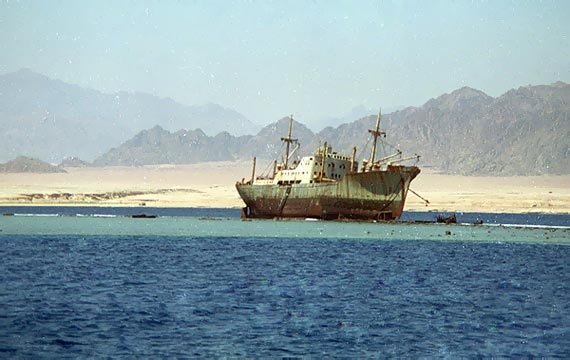
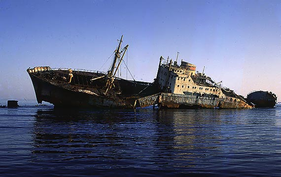
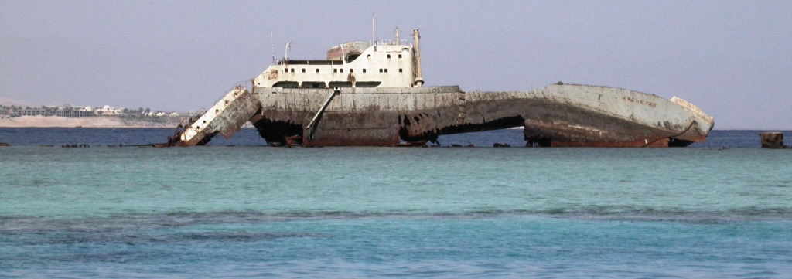
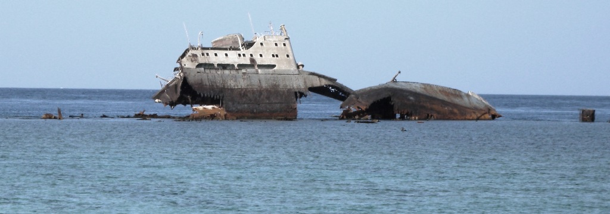
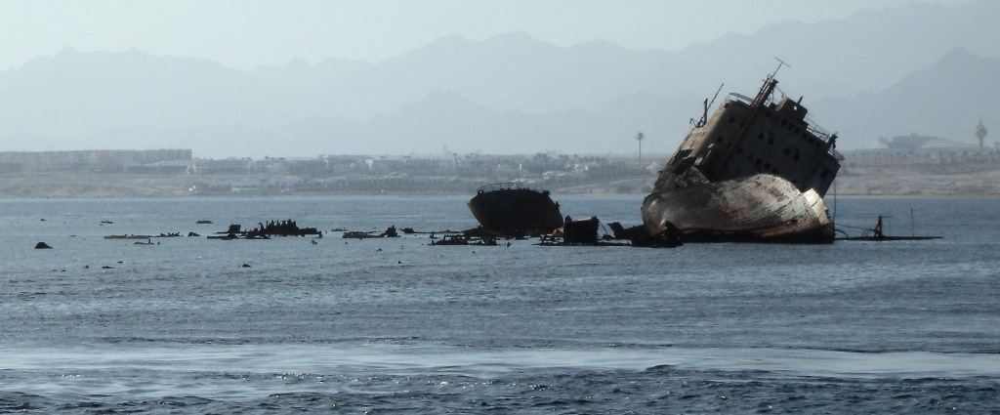

An old rusty ship on a reef
")
Tiran Island is surrounded by numerous coral reefs. Every day, hundreds of tourists arrive there in small boats to admire the corals and colorful fish in the exceptionally clear water. Busy shipping lanes run along the Tiran Island. From the Conrad and Baron hotels, two ships can be seen, once grounded on the reef but not yet completely destroyed by the waves.
In September 1981, the merchant vessel Lullia (Panama, 3,461 tons) ran aground near Gordon Reef.
During calm times, the ship can be approached by tourist boats. It was not dismantled because the water nearby was not deep enough. A partially sunken ship is more dangerous than a clearly visible one. Tourists notice the ship before they notice the nearby lighthouse.

Lullia, 1981 (с)cameldive.ru

Lullia, 1990 (с)cameldive.ru
Despite the presence of several lighthouses on these reefs, another vessel collided with the Lullia in 2000. This accelerated the deterioration of the older ship.
I visited this area in 2004 and 2009. The ship deteriorates quite quickly.
 
Lullia, 2004
Lullia, 2009
{kind=link}
{kind=link}
If you approach Gordon Reef from the other side, you can see the rusty wake of a ship. The ship quickly "dissolves" into the sea. In stormy weather, debris is washed up on the reef.

Lullia, 2009. View from Tiran Island.
{kind=link}
In 1984, the cargo ship Kormoran (Germany) struck Laguna Reef at high speed. It was severely damaged and sank.
In 1985, the cargo barge Lara (Cyprus, 4,752 tons) ran aground near Jackson Reef. In 1996, most of the vessel was dismantled and sunk. All that remained was a skeleton resembling a building.
Here's a diagram of the reef and seabed between Tiran Island and the Sinai coast. Three ships are indicated: Lullia (Lovilla), Lara, and Kormoran.
{kind=link}